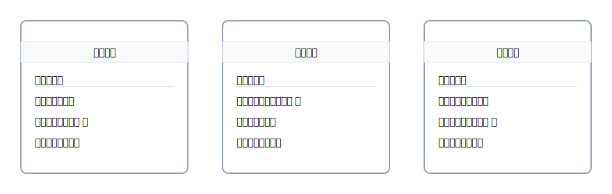

2. 伝票（入金・出金・振替）の使い分け
伝票は、仕訳を“書きやすくするための指示書”。
入金・出金・振替の3兄弟だけ覚えれば、迷いが一気に減ります。

3兄弟の早見表
| 伝票 | どんなとき？ | 右（貸方） | 左（借方）の代表例 |
|---|---|---|---|
| 入金伝票 | お金が入ってきた | — | 現金／普通預金 |
| 出金伝票 | お金を払った | 現金 | 費用・仕入 等 |
| 振替伝票 | 現金を使わない移動 | 資産・負債 等 | 資産・費用 等 |
※ 入金伝票は実務では「借方：現金等」を意識、右は相手科目がくる設計です。
ミニ例題（公式4列）
「小切手を振り出して備品20,000円を購入」
右（出る）＝当座預金、左（入る/増える）＝備品
| 借方科目 | 金額 | 貸方科目 | 金額 |
|---|---|---|---|
| 備品 | 20,000 | 当座預金 | 20,000 |
「得意先から売掛金50,000円を振込で回収」
右＝売掛金の減少、左＝普通預金の増加
| 借方科目 | 金額 | 貸方科目 | 金額 |
|---|---|---|---|
| 普通預金 | 50,000 | 売掛金 | 50,000 |
迷ったら：手段で右を決める → 左を考える → 金額一致